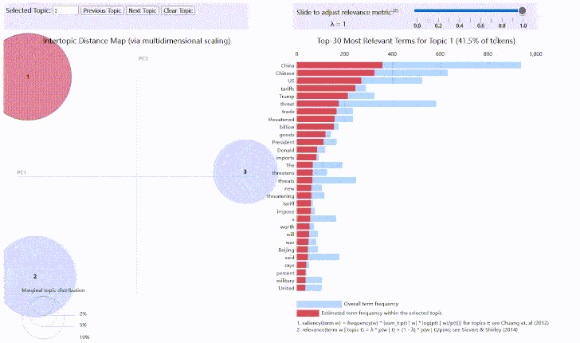

library(stringr)
library(sentimentr)
library(dplyr, quietly = TRUE)
library(reshape2)
library(tidyr)
library(tidytext)
setwd('D:/R-4.0.0/RStudio.workfile')
tweet.df <- read.csv("en_china_threat.csv",header = T,encoding = 'UTF-8')
tweet.df <- tweet.df[1:1000,]
colnames(tweet.df) <- c("id","text")
tweet.df <- data.frame(tweet.df["text"])
#查看每个句子大概包含多少个字符
charnum <- as.vector(sapply(tweet.df,nchar))
hist(charnum,breaks = 20)
library(tm)
## 初步数据清洗
tweet.df$text =str_replace_all(tweet.df$text,"[\\.\\,\\;]+", " ")
tweet.df$text =str_replace_all(tweet.df$text,"http\\w+", "")
tweet.df$text =str_replace_all(tweet.df$text,"@\\w+", " ")
tweet.df$text =str_replace_all(tweet.df$text,"[[:punct:]]", " ")
tweet.df$text =str_replace_all(tweet.df$text,"[[:digit:]]", " ")
tweet.df$text =str_replace_all(tweet.df$text,"^ ", " ")
tweet.df$text =str_replace_all(tweet.df$text,"[<].*[>]", " ")
library(caret)
#使用sentiment()函数得到情感评分
sentiment.score <- sentiment(tweet.df$text)
tweet.df$polarity <- sentiment.score$sentiment
tweet.final <- tweet.df[,c('text','polarity')]
tweet.final$sentiment <- ifelse(tweet.final$polarity <0, "Negative","Positive")
table(tweet.final$sentiment)##
## Negative Positive
## 700 300tweet.final$sentiment <- as.factor(tweet.final$sentiment)
#平衡数据集,重复在positive中采样
tweet.final <- upSample(x = tweet.final$text, y = tweet.final$sentiment)
names(tweet.final) <- c('text', 'sentiment')
head(tweet.final)## text
## 1 Korea We Willposted by Rob Quinn Newser Staff nbspApr nbspPresident Trump is taking a tough line on the North Korean nuclear threat days ahead of his first meeting with his Chinese counterpart
## 2 Global tradeTrade wars wounded Companies improvise to dodge cost hikesBy PAUL WISEMANJanuary WASHINGTON AP In Rochester New York a maker of furnaces for semiconductor and solar companies is moving its research and development to China to dodge President Donald Trumps import taxes a move that threatens a handful of its US jobs
## 3 They said if I left China it would threaten state security
## 4 Its in our interest to end the uncertainty of percent tariffs on imports from China a threat which hangs like a Sword of Damocles over American manufacturers
## 5 Trump has ultimately threatened tariffs on over billion in Chinese goods covering virtually all US imports from China
## 6 The administration has imposed billions of dollars in tariffs on Chinese and Canadian products and threatened billions more on US allies in Europe
## sentiment
## 1 Negative
## 2 Negative
## 3 Negative
## 4 Negative
## 5 Negative
## 6 Negativetable(tweet.final$sentiment)##
## Negative Positive
## 700 700tweet.final$id <- seq(1, nrow(tweet.final))
tweet.text <- tweet.final[,1]
#创建语料库
tweet.text <- Corpus(VectorSource(tweet.text))
#去除停用词
tweet.text <- tm_map(tweet.text,removeWords,stopwords())
tweet.dtm <- DocumentTermMatrix(tweet.text)
freq.terms <- sort(colSums(as.matrix(tweet.dtm)),decreasing = TRUE)
freq.terms <- data.frame(name = names(freq.terms),
fre = freq.terms,row.names = NULL)
head(freq.terms,10)## name fre
## 1 china 941
## 2 chinese 650
## 3 threat 597
## 4 trump 319
## 5 tariffs 306
## 6 trade 288
## 7 threats 247
## 8 threatened 239
## 9 billion 200
## 10 said 188length(which(freq.terms$fre>100))## [1] 26library(wordcloud)
set.seed(623) # to make it reproducible
## 将文本数据从语料库中转化为dataframe
polaritydf <- data.frame(text=sapply(tweet.text, identity), stringsAsFactors=F)
polaritydf$label <- rep(c("pos","neg"),each = length(polaritydf$text)/2)
## 对比分析两种情感评论的用词长度
wordlist <- str_split(polaritydf$text,"[[:space:]]+")
wordlen <- unlist(lapply(wordlist,length))
polaritydf$wordlen <- wordlen
##negtive word 的长度稍长
wordfre <- polaritydf%>%unnest_tokens(word,text)%>%
group_by(label,word)%>%
summarise(Fre = n())%>%
arrange(desc(Fre)) %>%
acast(word~label,value.var = "Fre",fill = 0)## 可视化两种类型情感对比的词云
comparison.cloud(wordfre,scale=c(4,.5),max.words=180,
title.size=1.5,colors = c("darkgreen","darkred"))
#找出出现较为频繁的词语,出现频率大于5
dict <- names(which(wordfre[,1]+wordfre[,2] >5))
tw.dtm <- DocumentTermMatrix(tweet.text,control = list(dictionary = dict))
#由于矩阵比较 稀疏,再控制一下稀疏程度
tw.dtm <- removeSparseTerms(tw.dtm,0.99)library(lda)
library(LDAvis)
library(servr)
term_table <- table(unlist(wordlist))
term_table <- sort(term_table, decreasing = TRUE)
term_table[1:20]##
## China Chinese threat US Trump tariffs
## 938 722 650 592 535 318 299
## trade threats threatened billion said The s
## 247 245 239 199 187 179 160
## goods North President Chinas security South
## 158 158 152 138 137 129dim(term_table)## [1] 7210## 剔除空的数据,否则json报错
del <- (names(term_table)) %in% c("")
term_table <- term_table[!del]
dim(term_table)## [1] 7209# 删除出现次数小于10次的词语
del <- term_table < 10
term_table <- term_table[!del]
vocab <- names(term_table)
# 将数据整理为lda包可使用的形式
get_terms <- function(x) {
index <- match(x, vocab)
index <- index[!is.na(index)]
rbind(as.integer(index - 1), as.integer(rep(1, length(index))))
}
documents <- lapply(wordlist, get_terms)
## documents[[i]]：表示第i个文档
## documents[[i]][1,j] : 表示文档i中第j个单词对应在词库中的（索引－1）
## documents[[i]][2,j] : 表示文档i中第j个单词出现的次数
## 使用lda模型
alpha <- 0.02;eta <- 0.02
t1 <- Sys.time()
fit <- lda.collapsed.gibbs.sampler(documents = documents, K = 3,
vocab = vocab,
num.iterations = 50, alpha = alpha,
eta = eta, initial = NULL, burnin = 0,
compute.log.likelihood = TRUE)
t2 <- Sys.time()
t2 - t1 # about 30 sec on laptop## Time difference of 0.1685522 secsdim(fit$topics)## [1] 3 573## 可视化lda模型
## 对模型进行可视化
theta <- t(apply(fit$document_sums + alpha, 2, function(x) x/sum(x)))
phi <- t(apply(t(fit$topics) + eta, 2, function(x) x/sum(x)))
doc_length <- sapply(documents, function(x) sum(x[2, ]))
term_frequency <- as.vector(term_table)
pol_ldavis <- list(phi = phi,theta = theta,doc_length = doc_length,
vocab = vocab,term_frequency = term_frequency)
# create the JSON object to feed the visualization:
json <- createJSON(phi = pol_ldavis$phi,
theta = pol_ldavis$theta,
doc.length = pol_ldavis$doc_length,
vocab = pol_ldavis$vocab,
term.frequency = pol_ldavis$term_frequency)
serVis(json, out.dir = "vis")library(networkD3)
library(igraph)
library(RTextTools)
library(magrittr)
#bigram
TweetDf <- data.frame(as.character(tweet.final$text))
names(TweetDf) <- "text"
bi.gram.words <- TweetDf %>%
unnest_tokens(
input = text,
output = bigram,
token = 'ngrams',
n = 2
) %>%
filter(! is.na(bigram))
extra.stop.words <- c('https')
stopwords.df <- tibble(
word = c(stopwords(kind = 'es'),
stopwords(kind = 'en'),
extra.stop.words)
)
bi.gram.words %<>%
separate(col = bigram, into = c('word1', 'word2'), sep = ' ') %>%
filter(! word1 %in% stopwords.df$word) %>%
filter(! word2 %in% stopwords.df$word) %>%
filter(! is.na(word1)) %>%
filter(! is.na(word2))
bi.gram.count <- bi.gram.words %>%
dplyr::count(word1, word2, sort = TRUE) %>%
dplyr::rename(weight = n)
threshold <- 20
filter=dplyr::filter
network <- bi.gram.count %>%
filter(weight > threshold) %>%
graph_from_data_frame(directed = FALSE)
# Store the degree.
V(network)$degree <- strength(graph = network)
# Compute the weight shares.
E(network)$width <- E(network)$weight/max(E(network)$weight)
# Create networkD3 object.
network.D3 <- igraph_to_networkD3(g = network)
# Define node size.
network.D3$nodes %<>% mutate(Degree = (1E-2)*V(network)$degree)
# Define color group
network.D3$nodes %<>% mutate(Group = 1)
# Define edges width.
network.D3$links$Width <- 10*E(network)$width
forceNetwork(
Links = network.D3$links,
Nodes = network.D3$nodes,
Source = 'source',
Target = 'target',
NodeID = 'name',
Group = 'Group',
opacity = 0.9,
Value = 'Width',
Nodesize = 'Degree',
# We input a JavaScript function.
linkWidth = JS("function(d) { return Math.sqrt(d.value); }"),
fontSize = 12,
zoom = TRUE,
opacityNoHover = 1
)